Hyperbola Problems
1Determine and plot the coordinates of the foci and vertices and calculate the eccentricity of the following hyperbolas:
1 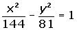
2 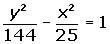
3
4
2Determine and plot the coordinates of the foci and vertices and calculate the eccentricity of the following hyperbolas:
1 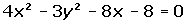
2 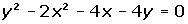
3Calculate the equation of the hyperbola with a transverse axis of 8 and a focal length of 10.
4The transverse axis of a hyperbola is 12 and the curve passes through the point P = (8, 14). Find its equation.
5Calculate the equation of the hyperbola centered at (0, 0) whose focal length is 34 and the distance from one focus to the closest vertex is 2.
6Determine the equation of the hyperbola centered at (0, 0) that passes through the points: 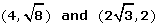.
7Determine the equation of the hyperbola centered at (0, 0) that passes through the point 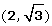 and whose eccentricity is  .
.
8Determine the equation of the hyperbola centered at (0, 0) knowing that one focus is 2 units from one vertex and 50 from the other.
9Determine the coordinates of the point(s) of intersection between the line x + y − 1 = 0 and the hyperbola x2 − 2y2 = 1.
10A rectangular hyperbola passes through the point (4, 1/2). Find its equation and determine the coordinates of the vertices and foci.
11The transverse axis of a hyperbola is 12 and the eccentricity is 4/3. Calculate the equation of this hyperbola.
12Calculate the equation of a rectangular hyperbola knowing that its focal length is 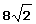.
13The length of the conjugate axis of a hyperbola is 8 and the equations of the asymptotes are: 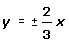. Calculate the equation of the hyperbola, its foci and vertices.
1
Determine and plot the coordinates of the foci and vertices and calculate the eccentricity of the following hyperbolas:
1
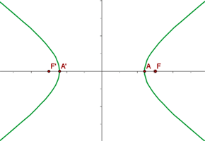


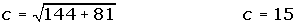
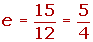
2
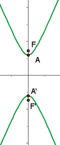

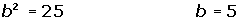
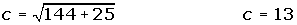
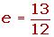
3
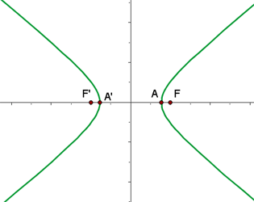
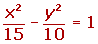
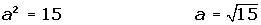
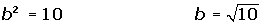
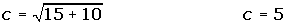
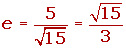
4
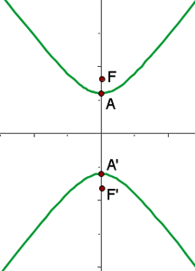
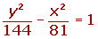
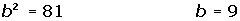
2
Determine and plot the coordinates of the foci and vertices and calculate the eccentricity of the following hyperbolas:
1
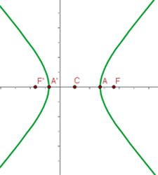
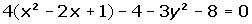
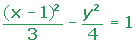
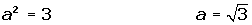

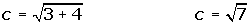
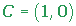
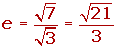
2
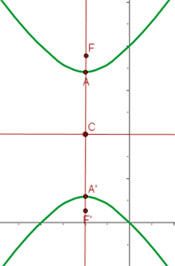
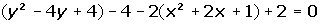
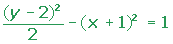
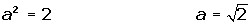
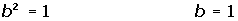
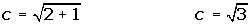
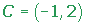
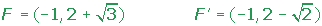
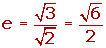
3
Calculate the equation of the hyperbola with a transverse axis of 8 and a focal length of 10.
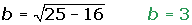
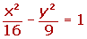
4
The transverse axis of a hyperbola is 12 and the curve passes through the point P = (8, 14). Find its equation.
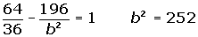
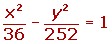
5
Calculate the equation of the hyperbola centered at (0, 0) whose focal length is 34 and the distance from one focus to the closest vertex is 2.
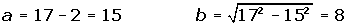
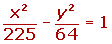
6
Determine the equation of the hyperbola centered at (0, 0) that passes through the points: .
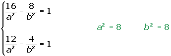
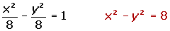
7
Determine the equation of the hyperbola centered at (0, 0) that passes through the point and whose eccentricity is  .
.
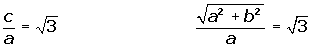
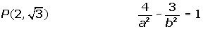
8
Determine the equation of the hyperbola centered at (0, 0) knowing that one focus is 2 units from one vertex and 50 from the other.
9
Determine the coordinates of the point(s) of intersection between the line x + y − 1 = 0 and the hyperbola x2 - 2y2 = 1.
10
A rectangular hyperbola passes through the point (4, 1/2). Find its equation and determine the coordinates of the vertices and foci.
11
The transverse axis of a hyperbola is 12 and the eccentricity is 4/3. Calculate the equation of this hyperbola.

12
Calculate the equation of a rectangular hyperbola knowing that its focal length is .
13
The length of the conjugate axis of a hyperbola is 8 and the equations of the asymptotes are: . Calculate the equation of the hyperbola, its foci and vertices.